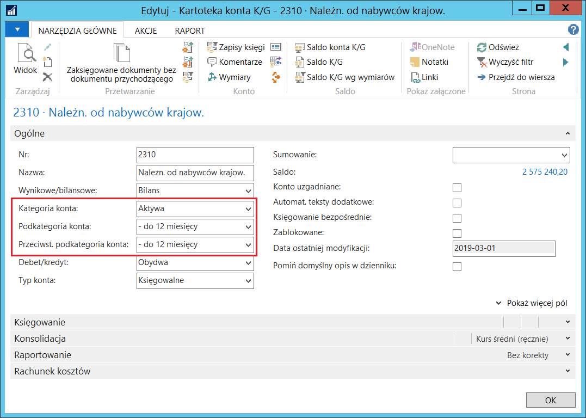
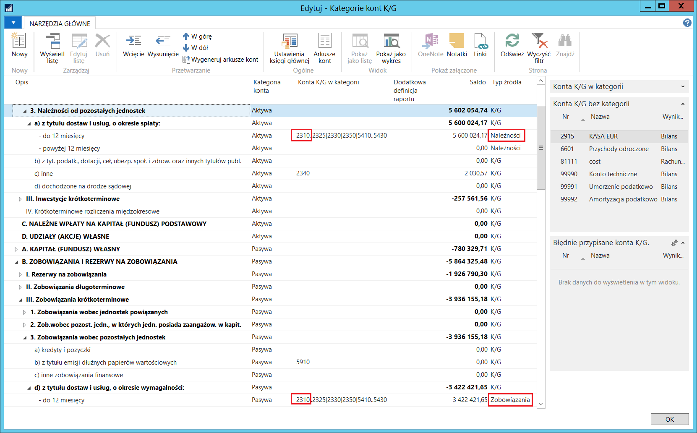
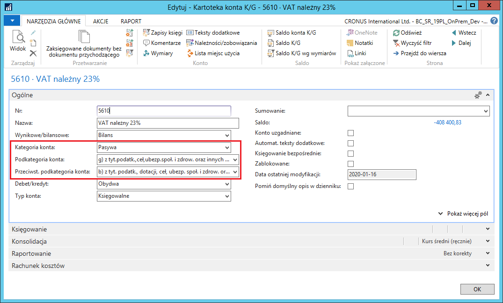
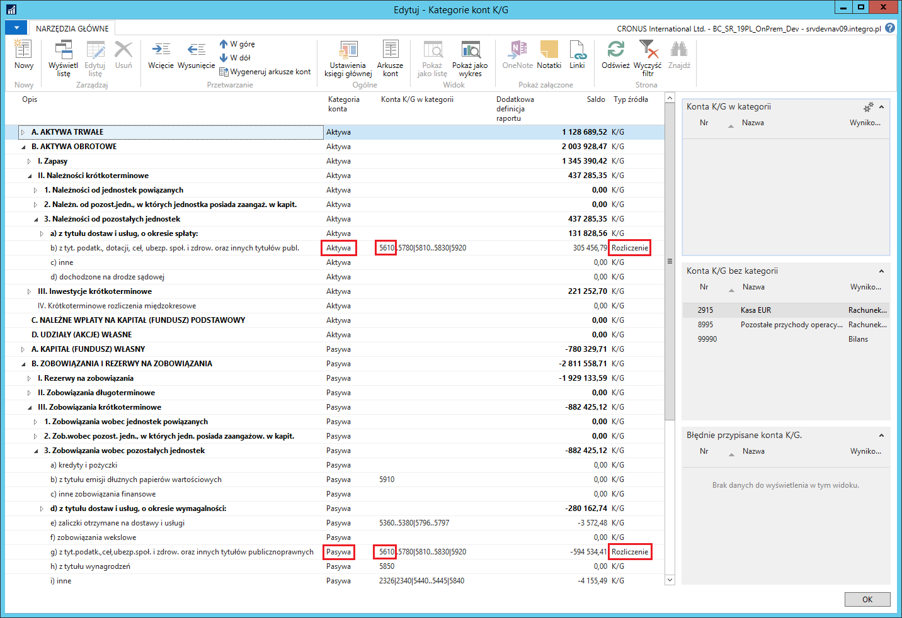
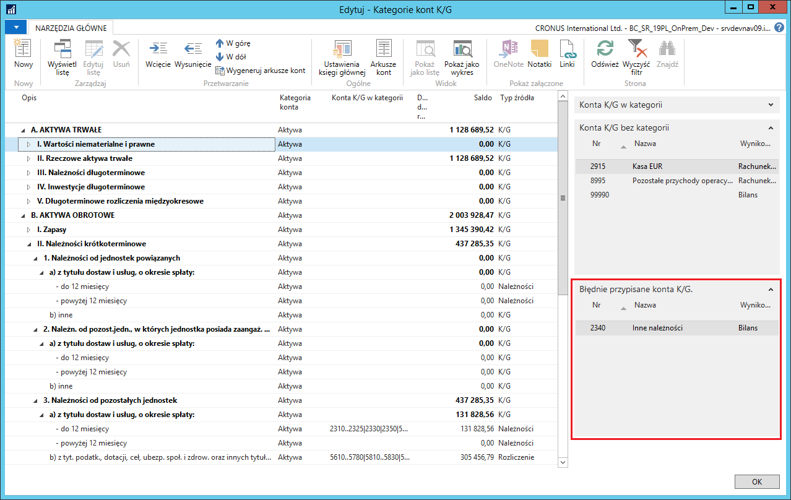
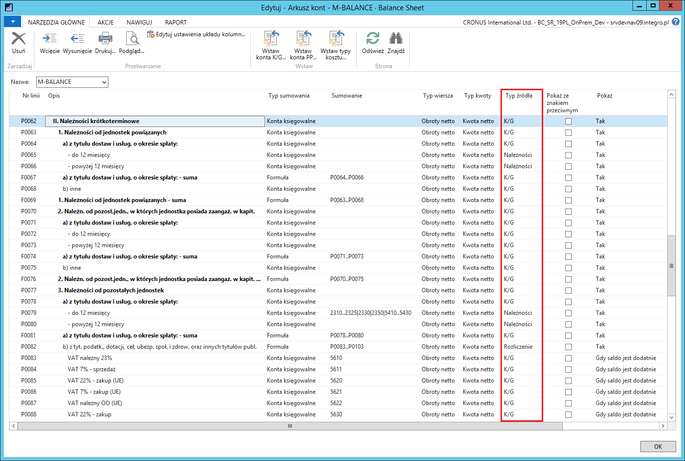

Bilans
Informacje ogólne
Rozszerzenia dodane w ramach Polskiej Lokalizacji dają możliwość takiego skonfigurowania wybranych pozycji bilansu, aby opierały się one wyłącznie o zapisy debetowe lub wyłącznie o zapisy kredytowe związane z księgami pomocniczymi nabywców i dostawców. Przepisy prawa wymagają takiej prezentacji należności i zobowiązań w bilansie. Ponadto salda niektórych kont księgi głównej mogą być prezentowane w aktywach lub pasywach, w zależności od tego, czy wykazują saldo debetowe, czy kredytowe – w taki sposób należy prezentować np. rozrachunki publiczno-prawne.
Ustawienia
W standardowej funkcjonalności systemu Microsoft Dynamics 365 Business Central on‑premises konto księgi głównej może należeć tylko do jednej kategorii/podkategorii kont. Niektóre pozycje bilansu sporządzanego zgodnie z polskimi przepisami wymagają, aby jedno konto księgi głównej przynależało do dwóch kategorii: należności i zobowiązań.
Jeżeli podkategoria konta, widoczna w kartotece konta księgi głównej, jest oparta o źródło typu Należności lub Zobowiązania, należy określić również przeciwstawną podkategorię dla tego konta, która ma przeciwny typ źródła. W tym celu, należy wykonać następujące kroki:
Należy wybrać Działy > Zarządzanie Finansami > Księga główna > Plan kont.
W oknie Plan kont, które się otworzy, należy ustawić kursor w wierszu z wybranym kontem rozrachunkowym używanym w konfiguracji Grup księgowych nabywcy lub Grup księgowych dostawcy, a następnie wybrać Edytuj.
W oknie Kartoteka konta K/G, na karcie skróconej Ogólne, należy wypełnić pola zgodnie z poniższym opisem:
Kategoria konta – należy wybrać jedną z opcji:
Aktywa – jeśli jest to konto rozrachunków z odbiorcami,
Pasywa – jeśli jest to konto rozrachunków z dostawcami.
Podkategoria konta – z listy rozwijanej w tym polu należy wybrać:
podkategorię, dla której ustawione jest źródło typu Należności, jeśli w polu Kategoria konta została wybrana opcja Aktywa,
podkategorię, dla której ustawione jest źródło typu Zobowiązania, jeśli w polu Kategoria konta została wybrana opcja Pasywa.
Przeciwst. podkategoria konta – z listy rozwijanej w tym polu należy wybrać:
podkategorię, dla której ustawione jest źródło typu Zobowiązania, jeśli w polu Kategoria konta została wybrana opcja Aktywa,
podkategorię, dla której ustawione jest źródło typu Należności, jeśli w polu Kategoria konta została wybrana opcja Pasywa.

W oknie Kategorie kont K/G, w polu Konta K/G w kategorii prezentowany jest zestaw kont księgi głównej przyporządkowanych do danej podkategorii. Konto przyporządkowane do podkategorii ze źródłem typu Należności, powinno być przyporządkowane również do podkategorii ze źródłem typu Zobowiązania i odwrotnie, aby zagwarantować ujęcie wszystkich sald wszystkich kont księgi głównej w bilansie.

Jeżeli podkategoria konta, widoczna w kartotece konta księgi głównej, jest oparta o źródło typu Rozliczenie, należy określić przeciwstawną podkategorię dla tego konta, również ze źródłem Rozliczenie, ale przynależącą do przeciwnej kategorii. W tym celu, należy wykonać następujące kroki:
Należy wybrać Działy > Zarządzanie Finansami > Księga główna > Plan kont.
W oknie Plan kont, które się otworzy, należy ustawić kursor w wierszu z wybranym kontem księgi głównej, np. dotyczącym rozrachunków publiczno-prawnych, a następnie wybrać Edytuj.
W oknie Kartoteka konta K/G, na karcie skróconej Ogólne, należy wypełnić pola zgodnie z poniższym opisem:
Kategoria konta – należy wybrać jedną z opcji: Aktywa lub Pasywa
Podkategoria konta – z listy rozwijanej w tym polu należy wybrać podkategorię, dla której ustawione jest źródło typu Rozliczenie, przypisaną do kategorii wybranej w polu Kategoria konta
Przeciwst. podkategoria konta – z listy rozwijanej w tym polu należy wybrać podkategorię, dla której ustawione jest źródło typu Rozliczenie, przypisaną do kategorii przeciwnej do tej wybranej w polu Kategoria konta.

W oknie Kategorie kont K/G, w polu Konta K/G w kategorii prezentowany jest zestaw kont księgi głównej przyporządkowanych do danej podkategorii. Konto przyporządkowane do podkategorii ze źródłem typu Rozliczenie w kategorii Aktywa, powinno być przyporządkowane również do podkategorii ze źródłem typu Rozliczenie w kategorii Pasywa, aby zagwarantować ujęcie wszystkich sald wszystkich kont księgi głównej w bilansie.

Standardowa funkcjonalność systemu Microsoft Dynamics 365 Business Central on‑premises zawiera pole informacji Konta K/G bez kategorii, prezentujące konta księgi głównej, które nie zostały przypisane do żadnej kategorii i podkategorii. W ramach Polskiej Lokalizacji zostało dodane pole informacji Błędnie przypisane konta K/G, które prezentuje konta księgi głównej przypisane wyłącznie do jednej podkategorii, mającej źródło typu Należności, Zobowiązania lub Rozliczenie, czyli analizującej wyłącznie zapisy po jednej stronie danego konta. Aby w bilansie pojawiła się całość obrotów danego konta księgi głównej, należy przypisać je do przeciwstawnej kategorii lub wybrać dla niego kategorię ze źródłem typu K/G.

Obsługa
Na podstawie kategorii kont można w standardowy sposób wygenerować arkusze kont, przy użyciu akcji Wygeneruj arkusze kont w oknie Kategorie kont K/G. Funkcja generująca arkusze kont została dostosowana w taki sposób, aby ustawiać typ źródła w poszczególnych pozycjach bilansu w wygenerowanym arkuszu kont, na podstawie ustawienia typów źródła poszczególnych podkategorii kont K/G. W przypadku podkategorii z typem źródła Rozliczenie, pod wierszem z pozycją bilansu tworzone są wiersze techniczne z kontami księgi głównej wchodzącymi w skład pozycji bilansu. W pozycjach z typem źródła Formuła są prezentowane salda powiązanych z nimi kont księgi głównej.
Arkusze kont mogą być też tworzone ręcznie. W tej sytuacji, w wierszu arkusza kont jest możliwość zaznaczenia, że dane mają dotyczyć wyłącznie należności lub zobowiązań, poprzez wybranie odpowiedniej opcji w polu Typ źródła.
Uwaga
Typ źródła Należności lub Zobowiązania nie może być użyty, gdy:
kwoty pochodzą z budżetu
kwoty pochodzą z arkusza analitycznego
kwoty mają być wyrażone w dodatkowej walucie raportowania
kwota jest innego typu niż Kwota netto
W takich przypadkach wartość komórki arkusza nie będzie obliczona.

Aby w pozycjach z typem źródła Należności lub Zobowiązania saldo było poprawnie obliczone, program analizuje zapisy szczegółowe ksiąg nabywcy, dostawcy i pracownika, połączone z danym kontem księgi głównej poprzez konfigurację Grup księgowych nabywców, Grup księgowych dostawców i Grup księgowych pracownika. Wymagane jest, aby saldo konta księgi głównej było zgodne z saldem w księgach pomocniczych do niego przypisanych.
Przykład:
Konto księgi głównej połączone jest z wybraną Grupą księgową nabywców. W tej grupie księgowej zaksięgowano fakturę na 100 zł i płatność na 50 zł. Oto wyniki, które dla tego konta pokaże arkusz kont, w zależności od wybranego typu źródła:
K/G 50 zł
Należności 100 zł
Zobowiązania 50 zł
W sytuacji, gdy faktura zostanie rozliczona z płatnością, wyniki będą następujące:
K/G 50 zł
Należności 50 zł
Zobowiązania 0 zł
W powyższym przykładzie można zauważyć, że aby bilans ujmował całość zapisów, konto musi wystąpić w dwóch pozycjach bilansu, raz jako Zobowiązania, raz jako Należności. Alternatywnie jego obroty można ująć całościowo (per saldo) w jednej pozycji z typem źródła K/G.
Aby w pozycjach z typem źródła Rozliczenie saldo było poprawnie obliczone, program analizuje znak kwoty salda każdego konta księgi głównej przypisanego do danej pozycji.
Przykład:
Do dwóch pozycji bilansu z typem źródła Rozliczenie (jednej w aktywach i jednej w pasywach) przypisane są trzy konta księgi głównej z grupy rozrachunków publiczno-prawnych, prezentujące salda dodatnie i ujemne:
Konto nr 1 -50 zł
Konto nr 2 100 zł
Konto nr 3 -250 zł
Oto wyniki, które dla tych kont pokaże arkusz kont:
Aktywa 100 zł
Pasywa 300 zł
W powyższym przykładzie można zauważyć, że aby w bilansie poprawnie zostały zaprezentowane salda poszczególnych rozrachunków publiczno-prawnych, każde powiązane z nimi konto księgi głównej musi wystąpić w dwóch pozycjach bilansu, raz w Aktywach, raz w Pasywach. Alternatywnie obroty tych kont można ująć całościowo (per saldo) w jednej pozycji z typem źródła K/G.